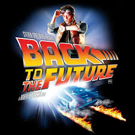

Same old: got bored with the normal way of doing thingss
|  |
Back to the FutureMarty McFly, a typical American teenager of the Eighties, is accidentally sent back to 1955 in a plutonium-powered DeLorean "time machine" invented by a slightly mad scientist. During his often hysterical, always amazing trip back in time, Marty must make certain his teenage parents-to-be meet and fall in love - so he can get back to the future. |
Harry PotterAn orphaned boy enrolls in a school of wizardry, where he learns the truth about himself, his family and the terrible evil that haunts the magical world. |
|
De Ferias com o ExThe most intelligent and profound TV series in Brazil. 10 attractive individuals discuss over important matters and kiss after careful consideration of eachother's personalities and values |